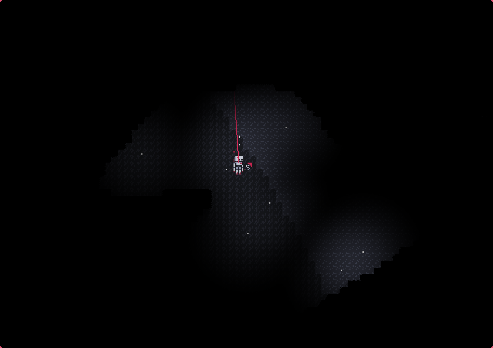
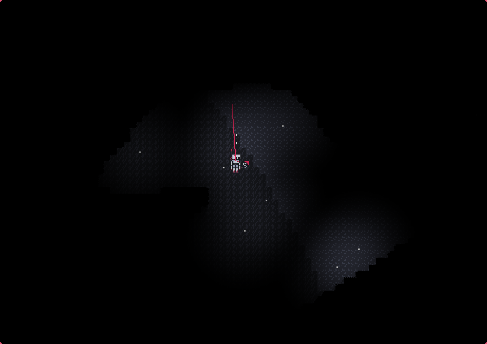

Nullspace
About
Nullspace is a passion project that has spanned over two year's worth of work. It's a 2D space exploration survival game set in a small solar system comprised of a few planets of differing environments and climates. It is far from complete, but it is the single project I have poured the most hours into. I am very happy with its progress so far despite how far it has to go.
The Tech
Nullspace has been a massive undertaking technically. This game began development in early 2023 and developed into what would become the Sprks Engine. It contains a general scene-actor system with an entity-component architecture, along with dynamic spatial partitioning to support the updating and rendering of such a large proc-gen world.
I built the codebase for this game with the intention of being robust. This allowed the transition to the Sprks Engine to be relatively smooth, as many systems could be directly ported over.
This project also utilizes a custom deferred rendering system for interesting 2D dynamic lighting. Shadows are cast using a screenspace ray marching shader and hundreds of scene lights can be rendered at once due to the nature of a deferred rendering system.
The Art
Nullspace has been my first large project in an artistic aspect. I create all the pixel art for this game, and despite it not being as technical as the code aspect, I develop and create using the same approach as when extending my codebase.
Whenever I approach a new issue with sprite creation or general visual or artistic design, I apply the same method of fast iteration with continuous testing. This approach to design in general has yielded me great results thus far, and has allowed me to stay open minded and create the best game I can, both visually and technically.
Gallery


 
